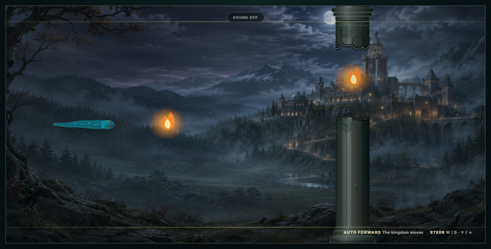

Project 01
Future Work Café 2035
A speculative biophilic café and flexible workspace exploring how planting, circulation, and AI visualization can shape future work environments.

Fandi Siribon
A speculative biophilic café and flexible workspace exploring how planting, circulation, and AI visualization can shape future work environments.
An AI-generated album cover exploring atmosphere, narrative, and visual identity through the imagery of a mysterious night train.


An atmospheric fantasy survival game where a living serpent navigates a mysterious kingdom as the rules shift from fire to water to gold.